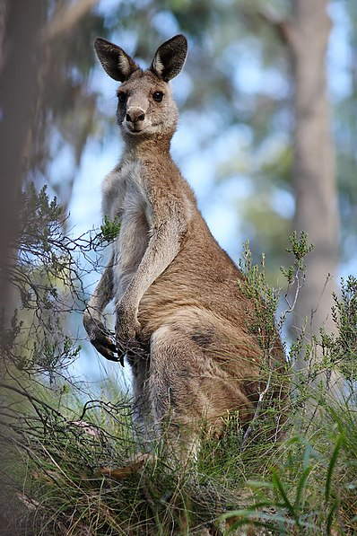

Кенгуру (лат. Macropus) — общеупотребительное название группы животных из отряда двурезцовых сумчатых млекопитающих
В широком смысле термин кенгуру относится ко всем представителям семейства кенгуровых, в особенности таким как красноногий филандер, антилоповый кенгуру, восточный серый (гигантский) кенгуру и западный серый кенгуру[2]. В узком смысле это название применяется по отношению к наиболее крупным представителям семейства, тогда как самые мелкие называются валлаби, а кенгуровые средних размеров — валлару
Кенгуру являются коренными обитателями Австралии. У этих животных большие, мощные задние ноги, большие ступни, приспособленные для прыжков, длинный массивный хвост для равновесия и маленькая голова. Как и у большинства других сумчатых, в организме самок кенгуру имеется особый мешочек (складка кожи), называемый сумкой, в котором детёныш завершает послеродовое развитие. Большие кенгуру хорошо приспособились к расчистке человеком земель для пастбищного земледелия и к изменениям среды обитания. Многие из меньших разновидностей кенгуровых редки и подвергаются опасности, в то время как большие кенгуру относительно многочисленны. По оценкам австралийского правительства, в 2011 году в районах коммерческого сбора урожая в Австралии проживало 34,3 миллиона кенгуру по сравнению с 25,1 миллионами годом ранее
Слово «кенгуру» происходит от «kanguroo» или «gangurru» — названия этого животного на кууку-йимитирском языке[en] аборигенов Австралии (язык пама-ньюнгской семьи), услышанного Джеймсом Куком от аборигенов во время его высадки на северо-восточном берегу Австралии в 1770 году
Широко распространился миф, в соответствии с которым Джеймс Кук, прибыв в Австралию и увидев крупное, передвигающееся прыжками, незнакомое ему животное, обратился к одному из аборигенов с вопросом «что это?», однако тот, не понимая английской речи Кука, ответил ему на своём родном языке: «не понимаю». Как гласит миф, эту фразу, которая якобы звучит как «кенгуру», Кук и принял за название животного. Согласно современным лингвистическим исследованиям под этим мифом нет фактологической базы
У кенгуру мощные задние лапы, массивный хвост, узкие плечи, маленькие передние лапы (похожие на руки человека), которыми они выкапывают клубни и корни. В случае опасности кенгуру переносит всю тяжесть тела на хвост, и тогда обе задние лапы, освободившись, одним движением сверху вниз наносят противнику сильный удар. Отталкиваясь мощными задними лапами, животные могут прыгать до 12 м в длину и до 3 м в высоту. Масса тела составляет до 80 кг[12]. Кенгуру отдыхает, опираясь на хвост
Кенгуру травоядны. Их основной рацион составляет трава и фрукты
Продолжительность жизни крупных кенгуру превышает 12 лет. В среднем кенгуру живут шесть лет в дикой природе и свыше 20 лет в неволе (в зависимости от разновидности). В естественной среде обитания большинство кенгуру, однако, не достигают зрелости
Размножаются кенгуру раз в год; определённого сезона размножения у них нет. Беременность короткая — 27—40 дней. Рождаются один-два детёныша; у большого рыжего (рыжего исполинского) кенгуру Macropus rufus — до 3. Длина тела новорожденного большого рыжего кенгуру около 25 мм — это самый мелкий детёныш среди млекопитающих по сравнению со взрослым животным. Самка вынашивает потомство в сумке 6—8 месяцев. У многих кенгуру происходит задержка в имплантации эмбриона. Новое спаривание происходит через 1—2 дня после рождения детёныша (у болотного валлаби — за день до рождения детёныша). После этого эмбрион остаётся в состоянии диапаузы до тех пор, пока предыдущий детёныш не вырастет или не погибнет. С этого момента эмбрион начинает развиваться. При благоприятных условиях новый детёныш рождается, как только старший окончательно покидает сумку
Дикие кенгуру служат объектом отстрела как с целью добычи мяса и шкур, так и с целью охраны пастбищ[16]. Мясо кенгуру считается более полезным для здоровья, чем большинство коммерчески производимого мяса, из-за его низкой жирности
Кенгуру является одним из символов Австралии. Это животное изображено на гербе Австралии[18], некоторых австралийских монетах[19][20], а также используется некоторыми из наиболее известных австралийских организаций, таких как, например, Qantas[21] и Королевские военно-воздушные силы Австралии
